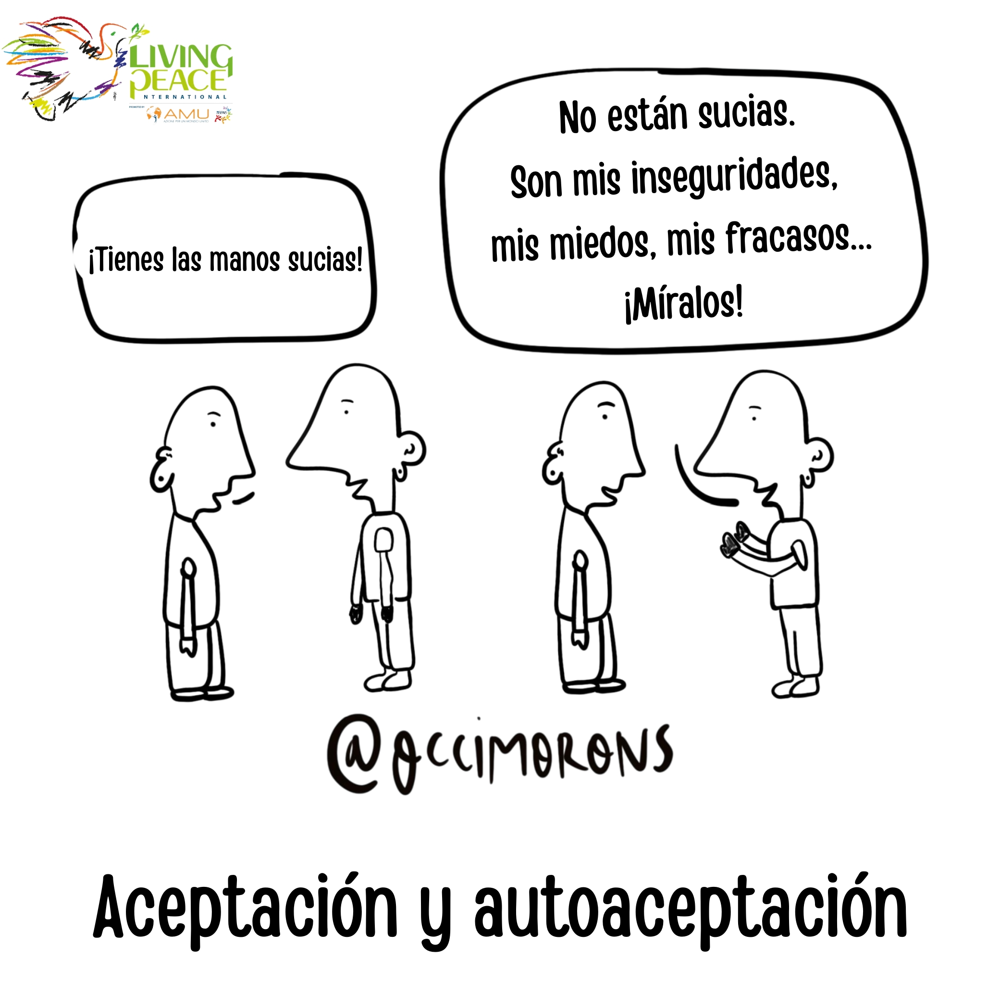

TU GESTO DE CUIDADO
Aceptación y autoaceptación
Vive esta cara como una acción concreta de paz.
PSICOLOGÍA · PARA LA PAZ
Lanza el dado y practica una actitud que ayude a sanar, comunicar, perdonar y relacionarte con más paz.

Vive esta cara como una acción concreta de paz.
LAS SEIS CARAS
Pulsa una tarjeta para explorar una práctica de paz interior y relacional.
“La paz interior se vuelve encuentro cuando acogemos emociones, perdonamos y comunicamos con amor.”
Aceptar · Perdonar · Comunicar